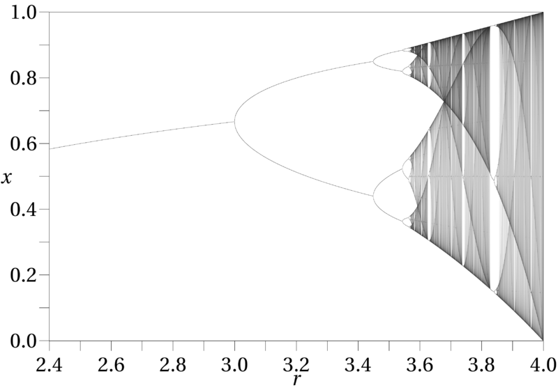

$\textbf{i.i.d. sequences.}$ As mentioned in the previous section, any i.i.d.\ sequence is stationary and hence has an associated shift measure preserving system, referred to as an $\textbf{i.i.d. shift}$. In the case when the i.i.d.\ random variables take on only a finite number of values with positive probability this measure preserving system is known as a $\textbf{Bernoulli shift}$.
$\textbf{A shift-equivariant function of a stationary sequence.}$ Given a stationary sequence $(X_n)_{n=1}^\infty$ and a measurable function $F:\R^\N\to\R^\N$ one can manufacture a new stationary sequence $(Y_n)_{n=1}^\infty$ via the equation
The verification that $(Y_n)_n$ is stationary is easy and is left to the reader. In this way one can generate starting from a known stationary sequence (e.g., an i.i.d.\ sequence) a large class of new and interesting sequences.
$\textbf{Stationary finite-state Markov chains.}$ Let $A=\{\alpha_1,\ldots,\alpha_d\}$ be a finite set. A finite-state Markov chain with state space $A$ is a sequence $(X_n)_{n=0}^\infty$ of $A$-valued random variables such that for each $n\ge0$ and $1\le j_1,j_2,\ldots,j_{n+1}\le d$ we have that
That is, the conditional distribution of $X_{n+1}$ given the $n$ preceding values $X_1,\ldots,X_n$ is only dependent on the value of the last observed variable $X_n$; this property is known as the $\textbf{Markov property}$. In most cases the chain is also assumed to be $\textbf{time-homogoneous}$, meaning that the expression in (16) is independent of $n$. In this case, if we denote
then the matrix $P = (p_{i,j})_{i,j=1}^d$ together with the probability distribution of the initial state $X_0$ determine the distribution of the entire sequence. The probability $p_{i,j}$ is referred to as the transition probability from state $i$ to $j$, and the matrix $P$ is called the $\textbf{transition matrix}$ of the chain. The distribution of $X_0$ is usually given as a probability vector $\pi=(\pi_1,\ldots,\pi_d)$ where $\pi_j=\mathrm{P}(X_0=j)$. It is easy to show (we will do so later, when we study Markov chains more in depth) that the vector $\pi^{(n)} = (\pi_1^{(n)},\ldots,\pi_d^{(n)})$ representing the probability distribution of $X_n$ is obtained from $\pi$ and $P$ via
the linear-algebraic result of multiplying the row vector $\pi$ by the matrix $P$ multiplied by itself $n$ times.
Assume now that $\pi$ is chosen to be a probability vector satisfying the equation $\pi=\pi P$; i.e., $\pi$ is a left-eigenvector of the transition matrix $P$ with eigenvalue $1$. By the above remarks, this means that the sequence $(X_n)_n$ is a sequence of identically distributed random variables, and furthermore it is easy to see that $(X_n)_n$ is in fact a stationary sequence. A Markov chain started with such an initial state distribution is called a $\textbf{stationary Markov chain}$. The associated shift measure preserving system is known as a $\textbf{Markov shift}$.
$\textbf{Tossing a randomly chosen coin.}$ Let $0\le U\le 1$ be a random variable. We can define a stationary sequence $X_1,X_2,\ldots$ by the following "two-step experiment": first, pick a random coin with bias $U$; then, toss the chosen coin infinitely many times (the coin tosses being independent of each other), denoting the results (encoded as 0's or 1's) by $X_1,X_2,\ldots$. Formally, we can define the distribution of the sequence by
Note that the $X_n$'s are identically distributed (in fact, the sequence is stationary), but not independent (except in the extreme case when $U$ is a.s.\ constant); rather, they are said to be conditionally independent given $U$.
$\textbf{Pólya's urn experiment.}$ Let $I_n$ be as in Chapter 1 the indicator random variable of the event that in Pólya's urn experiment a white ball was drawn in the $n$th round. We proved that the distribution of the sequence $(I_n)_{n=1}^\infty$ is invariant under finite permutations, so in particular it is stationary and has an associated measure preserving shift.
Rotation of the circle (a.k.a. $x+\alpha$ modulo 1). Let $(\Omega,\mathcal{F},\mathrm{P})$ be the unit interval $[0,1]$ with Lebesgue measure. One can consider $[0,1]$ to be topologically a circle by identifying both endpoints $0$ and $1$ as a single point. Fix $0\le \alpha<1$. The $\textbf{circle rotation map}$ $R_\alpha:[0,1)\to[0,1)$, which rotates the circle by a fraction $\alpha$, is defined by
$R_\alpha$ preserves Lebesgue measure.
ProofIf $A\subset [0,1]$ is a Borel set, then
A$\square$
The $2x$ mod $1$ map. Similarly to the previous example, the $2x$ mod $1$ map or $\textbf{doubling map}$ is also defined on the probability space $[0,1]$ with Lebesgue measure, and is given by
$D$ preserves Lebesgue measure.
ProofIf $A\subset [0,1]$ is a Borel set, then
A$\square$
We have seen before that the measure space $[0,1]$ with Lebesgue measure is isomorphic to the product space of an infinite sequence of i.i.d.\ unbiased coin tosses. It is easy to see that under this isomorphism, the doubling map translates to the shift map $S$ of the Bernoulli sequence. So, the doubling map is really a disguised version of the Bernoulli shift associated with i.i.d.\ unbiased coin tosses.
$\textbf{The continued fraction map.}$ A well-known fact from number theory says that any rational number $x\in (0,1)$ has a unique $\textbf{continued fraction expansion}$ of the form
where $k\ge 1$, $n_1,\ldots,n_k\in \N$ and $n_k>1$. Such an expansion is said to be finite, or terminating. Similarly, any irrational $x\in(0,1)$ has a unique infinite continued fraction expansion, which takes the form
where $n_1,n_2,n_3\ldots \in \N$. The numbers $n_1,n_2,\ldots$ are called the $\textbf{quotients}$ of the expansion, and are analogous to the digits in the decimal (or base-$b$) expansion of a real number. They are computed using a process that is a natural generalization of the Euclidean algorithm to real numbers, namely:
Gauss studied in 1812 the statistical distribution of the quotients for a number $x$ chosen uniformly at random in $(0,1)$. In this case, since $x$ is irrational with probability $1$ we need not worry about terminating expansions, and can consider the quotients $n_1, n_2, \ldots$ to be random variables defined on the measure space $(0,1)$ equipped with Lebesgue measure. Gauss reformulated the problem in terms of a measure preserving system (before this concept even existed!) now called the $\textbf{continued fraction map}$ or $\textbf{Gauss map}$. To see how this reformulation works, note first that, in the computation above, the first quotient $n_1$ can be represented in the form
(where $\lfloor z \rfloor$ denotes as usual the integer part of a real number $z$). Next, observe that, to continue with the computation of the next quotients $n_2,n_3,\ldots$, instead of replacing the two yardsticks of lengths $1$ and $x$ (which are used in the computation of the first quotient $n_1$) by a pair of yardsticks of lengths $x$ and $x_2=1-n_1 x$, one can instead rescale the yardstick of length $x$ to be of length 1, so that the yardstick of length $x_2$ becomes of length
(where $\{z\}=z-\lfloor z\rfloor$ is the $\textbf{fractional part}$ of $z$). The quotient $n_2$ can be computed from this rescaled value $x'$ in the same way that $n_1$ is computed from $x$. By continuing in this way one can obtain all the quotients by successive rescaling operations. Formally, define the Gauss map $G:(0,1)\to[0,1)$ and a function $N:(0,1)\to\N$ by
Then the above comments show that the quotients $n_1,n_2,\ldots$ are obtained by
(Note that the range of $G$ is $[0,1)$ instead of the open interval $(0,1)$ since $G(x)=0$ exactly when $x$ is a rational number of the form $x=1/m$; this is related to the fact that if we start with any rational number $x$, after a finite number of iterations of $G$ we will reach $0$ and will not be able to extract any more quotients.)
If you guessed that the Gauss map $G$ preserves Lebesgue measure, you guessed wrong. The real situation is more interesting:
The map $G$ preserves the $\textbf{Gauss measure}$ $\gamma$ on $(0,1)$, given by
Prove Lemma 6.11.
An important observation is that Gauss measure and Lebesgue measure are mutually absolutely continuous with respect to each other. This means that any event which has probability $1$ with respect to one is also a probability 1 event with respect to the other. Thus any almost-sure statistical results about the measure preserving system $((0,1),\mathcal{B},\gamma,G)$ (which will be obtained from the Birkhoff ergodic theorem once we develop the theory a bit more) will translate immediately to statements about the behavior of the continued fraction expansion of a uniformly random real number.
The continued fraction map described above is intimately related to the Euclidean algorithm for computing the greatest common divisor (GCD) of two integers, since iterating the map starting from a rational fraction $p/q$ reproduces precisely the sequence of quotients (and remainders, if one takes care to record them) in the execution of the Euclidean algorithm, and the last non-zero iteration $T^k(p/q)$ is of the form $1/d$, where $d$ is precisely the GCD of $p$ and $q$. Given the usefulness of the Euclidean algorithm and its historical status as one of the earliest algorithms ever described, is not surprising that already in the early days of the theory of algorithms (a.k.a.\ the 1960's) researchers were interested in giving a quantitative analysis of the running time of this venerable procedure. Such analyses lead directly to ergodic theoretic questions about the continued fraction map; the renewed interest in this classical problem has stimulated new and extremely interesting studies into the mathematics of the Gauss map. A highly readable account of these fascinating developments (the latest of which being less than 15 years old and still inspiring new research even in recent years) is told in Sections~4.5.2--4.5.3 of Vol.~II of Donald E.\ Knuth's celebrated book series The Art of Computer Programming.
$\textbf{The binary GCD algorithm.}$ Continuing the discussion above, a fact that is little-known outside computer science circles is that in modern times a new algorithm for computing GCD's was proposed that gives the Euclidean algorithm a serious run for its money, and is actually faster in some implementations. This algorithm was proposed by Josef Stein in 1967 and is known as $\textbf{the binary GCD algorithm}$ or $\textbf{Stein's algorithm}$. It replaces the integer division operations of the Euclidean algorithm, which are costly in some computer architectures, with a clever use of subtractions (which are generally cheap) and divisions by 2, which can be implemented in machine language as (also cheap) bit shift operations.
[Here is a summary of the algorithm: start with two integers $u<v$. First, extract the common power-of-$2$ factor to get to a situation where at least one of $u,v$ is odd. Then, successively replace $(u,v)$ with the new pair $(v-u)/2^k,u$ (sorted so that the smaller one gets called "$u$" and the bigger one "$v$"), where $2^k$ is the maximal power of 2 dividing $v-u$. Eventually one of the numbers becomes $0$ and the remaining one represents the odd component of the GCD of the original numbers.]
The computer scientist Richard Brent noticed in 1976 that this algorithm can also be reformulated in terms of a dynamical system. Similarly to the case of the Euclidean algorithm, the theoretical analysis of the running time of the binary GCD algorithm leads to highly nontrivial questions (most of them still open) about the behavior of this dynamical system. In particular, this system has an invariant measure that is mutually absolutely continuous with respect to Lebesgue measure, and is analogous to the Gauss measure, but no good formula for it is known. See Section~4.5.3 in Knuth's book mentioned above for more details.
The $3x+1$ map. The 3x+1 problem or $\textbf{Collatz problem}$ is a famous open problem (studied since the 1950's, and originating in work of L.~Collatz around 1932) about a discrete dynamical system on the positive integers. It pertains to iterations of the map $T:\N\to\N$ defined by
The conjecture is that for any initial number $n_0$, iterating the map will eventually lead to the cycle $1,4,2,1,4,2,1,\ldots$ The mathematician Paul Erdös was quoted as saying "Mathematics is not yet ready for such problems" and offered a \(\$500\) prize for its solution.
One of the many (ultimately unsuccessful) attempts to study the problem was based on the beautiful observation that this dynamical system can be turned into a measure preserving system, by extending its domain of definition to the ring $\textbf{Z}_2$ of $2$-adic integers. This is an extension of the usual ring $\Z$ of integers in which every element has a binary expansion that extends infinitely far to the left (instead of to the right as a real number would). That is, a dyadic integer is a formal expression of the form
where $a_0,a_1,a_2,\ldots\in \{0,1\}$. It can be shown that one can do algebra, and even an exotic form of calculus, on these numbers (and more generally over similar sets of numbers in which the binary expansion is replaced by a base-$p$ expansion where $p$ is an arbitrary prime number --- these are the so-called $p$-adic integers). Since the notion of the parity of a number extends to $2$-adic integers, the $3x+1$ map $T$ extends in an obvious way to a map $\tilde{T}:\mathbf{Z}_2\to\mathbf{Z}_2$. It can be shown that $\tilde{T}$ preserves the natural volume measure of $\textbf{Z}_2$. For more information, see Wikipedia or the article The $3x+1$ problem and its generalizations, by J.~C.~Lagarias (American Math. Monthly 92 (1985), 3--23).
$\textbf{Billiards.}$ In Chapter 5 we discussed billiard dynamical systems, and mentioned a formula on the limiting statistics of such a system, in the case when it is ergodic. This is related to the fact that the billiard dynamics also has an invariant measure, given (in a suitable parametrization of the phase space) by
$\textbf{Hamiltonian flow.}$ $\textbf{Hamiltonian mechanics}$ is a formalism for modeling a mechanical system of particles and rigid bodies interacting via physical forces, with no external influences. The phase space is some set $\Omega$ representing the possible states of the system (formally, it is a $\textbf{symplectic manifold}$, and has a smooth structure --- i.e., one can solve differential equations on it and do other calculus-type operations). The $\textbf{Hamiltonian flow}$ is a semigroup of maps $(H_s)_{s\ge 0}$ representing the time-evolution of the system, i.e., $H_s(\omega)$ takes an initial state $\omega\in\Omega$ of the system and returns a new state representing the state of the system $s$ time units in the future. A result known as Liouville's theorem says that the natural volume measure of the manifold is preserved under the Hamiltonian system. Thus, the Hamiltonian flow is a $\textbf{measure preserving flow}$ (the continuous-time analogue of a measure preserving system, which we will not discuss in detail). Such flows provided some of the original motivation for questions of ergodic theory, since, e.g., statistical physicists in the 19th century wanted to understand the statistical behavior of ideal gases (note that billiard can be thought of a toy model for a gas in an enclosed region).
$\textbf{Geodesic flow.}$ On a compact Riemann surface (or more generally a Riemannian manifold), the geodesic flow $(\varphi_s)_{s\ge0}$ is a family of maps, where each $\varphi_s$ takes a point on the manifold together with a "direction" at $s$ (formally, an element of the tangent space at $s$), and returns a new pair "point+direction" that is obtained by proceeding $s$ units of distance along the unique geodesic curve originating from $s$ in the given direction. (For a more formal description, see Wikipedia or a textbook on differential geometry). The geodesic flow preserves the volume measure and is thus a measure preserving flow.
$\textbf{The logistic map.}$ The logistic map was originally studied as a simple model for the dynamics of population growth of animal and plant species. It is given by the formula
where $r>0$ is a parameter of the system. Here, $x$ represents the size of the population, and $L_r(x)$ represents the size of the population one generation later, so successive iterations $L_r^{n}(x)$ correspond to the evolution of the population sizes over time starting from some initial size $x$. The assumptions underlying the model are that when $x$ is small one should observe roughly exponential growth when iterating the map, but as the size of the population increases, the environmental resources required to support growth are depleted, leading to starvation and a sharp decrease in the population size.
The logistic map is a famous example of the emergence of $\textbf{chaos}$: for values of $r$ between $0$ and $3$, the system stabilizes around a unique value ($0$ if $r\le 1$, or $(r-1)/r$ if $1\le r\le 3$). When $r$ becomes slightly bigger than 3 a $\textbf{bifurcation}$ occurs, leading to an oscillation between 2 values; as $r$ increases further, additional bifurcations occur (oscillation betweeen 4 values, 8 values etc.) until chaotic behavior emerges at $r\approx 3.57$ and continues (with occasional intervals of stability) until $r=4$, after which point the range of the map leaves $[0,1]$ so the model stops making sense as a dynamical system. See Figure 5 for an illustration of this remarkable phenomenon.

When $r=4$, the map $L_4$ has an invariant measure $\lambda$ on $(0,1)$ given by
(also known as the $\operatorname{Beta}(\tfrac12,\tfrac12)$ distribution).
Prove Lemma 6.13